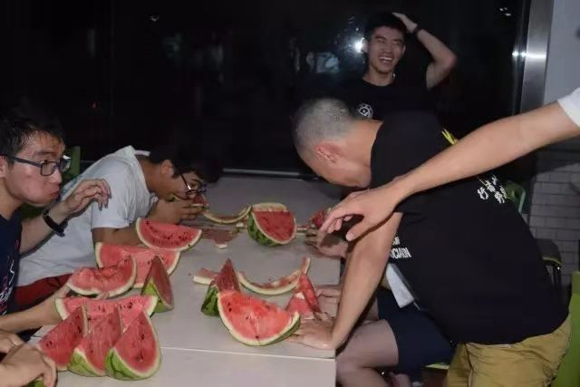
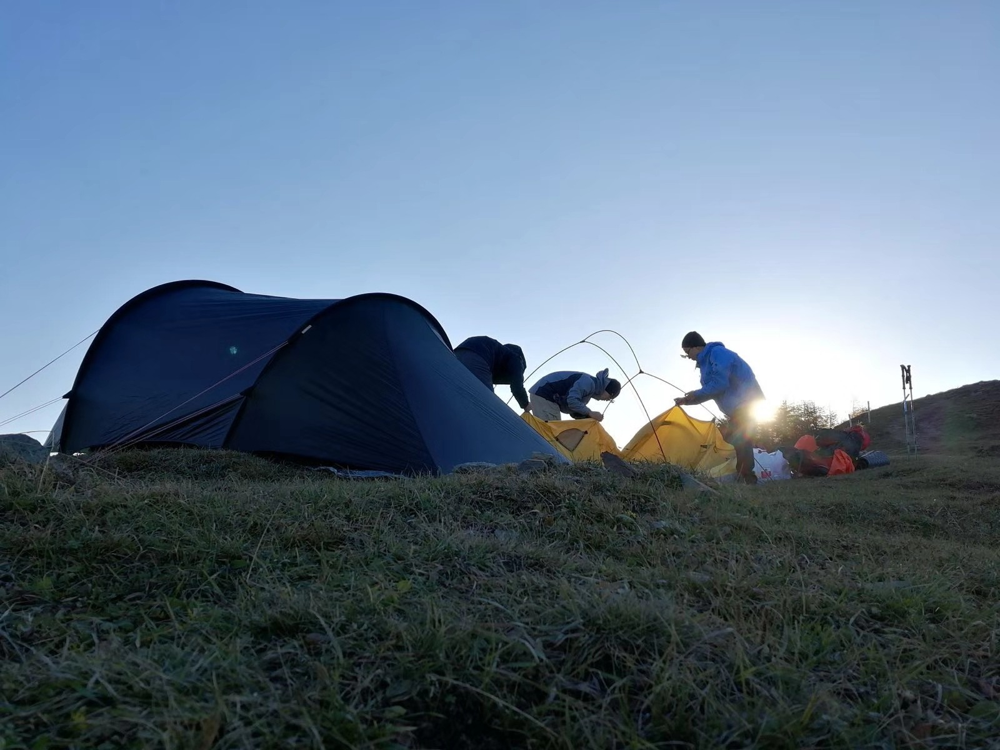
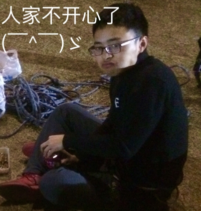

发信人: CHOCHO (chivalryCHO), 信区: outdoor
标 题: 【团爆】会长~
发信站: 饮水思源 (2018年10月07日14:40:06 星期天)
会长：李冬玉
每年的李冬玉都比去年更优秀。
那年BG前一秒说yyx、lq你们俩辣鸡，后一秒就倒了
screen.width - 200){this.width = screen.width - 200}">
现在，小玉攀个岩就买了瓶葡萄酒吹。
screen.width - 200){this.width = screen.width - 200}">
那年吃瓜大赛，他还只有头能发光。
 screen.width - 200){this.width = screen.width - 200}">
现在，哪儿都可以了。
 screen.width - 200){this.width = screen.width - 200}">
虽然每天晚上泡脚的贤者时间里，空间里都能看到老玉头的小情绪，但是或是因为户外或
是因为朋克，也可能因为QQ空间小游戏里的心动女友，生活总在快乐地继续。
screen.width - 200){this.width = screen.width - 200}">
因为太优秀同时兼任吉协核心的老玉头还是很忙的，所以你完全不必担心他哪天不理你或
者没回你的消息。但是哪天你的空间动态或者朋友圈他没给你点赞，那你可能需要小心点
。
 screen.width - 200){this.width = screen.width - 200}">
无论如何正如他自己所言，小玉都应该是以蜗牛的姿态爬上的金字塔尖，从一个体能并不
那么好的小白走到今天一个优秀的领队，及靠谱的会长，也希望他和这届会长团的各位能
够带领协会一如每一个野人的期待，越来越好。
--
跪在大山的面前
※ 来源:·饮水思源 bbs.sjtu.edu.cn·[FROM: 10.162.234.173]
|